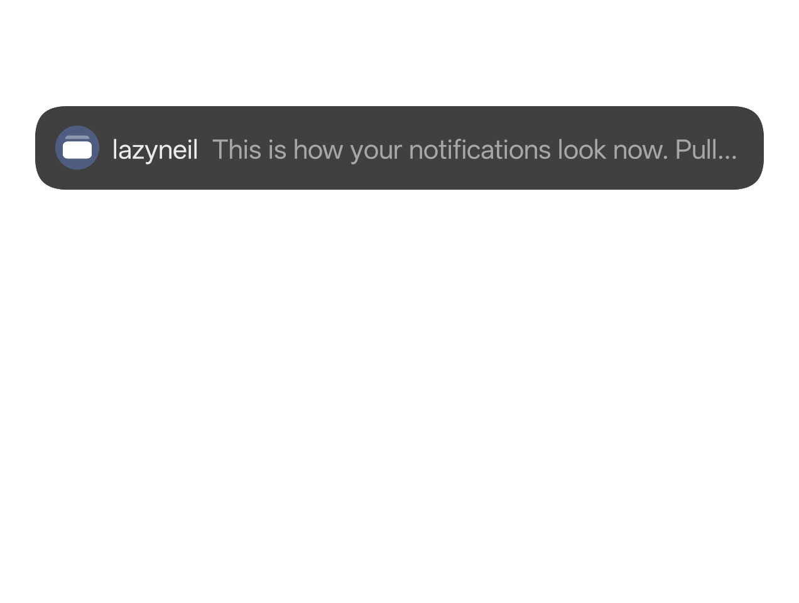
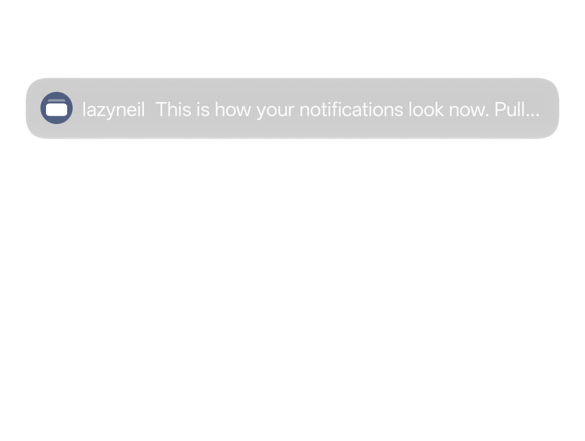

Notifications you can actually read.
ColorOS 17 draws notification cards as pale frosted glass with white text. Matte makes them solid. One tap, no root, fully reversible.


Same banner. Same app. Readable.
Real screenshots from a OnePlus 15 on ColorOS 17, over a white screen. Drag to compare.
Solid #404040 in dark mode, #fafafa in light mode.
No setting fixes this. Matte does.
Visual Blur, window-level blurs, high contrast text, light mode. All tested, none change the cards.
Solid cards
Heads-up banners and shade cards get an opaque background with full-contrast text.
No root
Uses a SystemUI debug switch the shell is allowed to set. No bootloader unlock, no Magisk.
Fully reversible
Switch off any time. A phone restart also clears it. No system files are touched.
Quick Settings tile
Toggle from the shade without opening the app.
Re-applies after reboot
With Shizuku, Matte turns itself back on once Shizuku is running again.
Works from a computer
Prefer no app at all? Two adb commands, or the bundled scripts.
Two ways in.
Pick one. Both set the same switch.
Shizuku
RecommendedOne-tap toggle on the phone, plus a Quick Settings tile.
- Install and start Shizuku.
- Install Matte and grant it Shizuku access.
- Switch Matte on. Add the tile if you like.
Computer
No appEnable USB debugging, connect the phone, run:
$ adb shell setprop debug.systemui.gaussblur_level 4 $ adb shell am crash com.android.systemui
$ adb shell setprop debug.systemui.gaussblur_level -1 $ adb shell am crash com.android.systemui
Or use scripts/matte.sh / matte.bat with on, off, status.
One debug switch, already built in.
ColorOS SystemUI reads debug.systemui.gaussblur_level at startup. Level 4 selects the branch ColorOS ships for low-end phones that skip blur, where cards are painted solid.
Android lets the shell user set debug.* properties, so adb or Shizuku can flip it without root. SystemUI is then restarted to pick it up. The value lives in memory until the phone restarts.
Side effect: the shade background, Quick Settings and volume panel lose their blur too.
Why not something else
- OverlaysFabricated overlays are blocked for the shell on Android 16: "Non-root shell cannot fabricate overlays".
- Custom themesThe theme engine does not load SystemUI colors for these cards.
- Root + LSPosedThe c17-statusbar module works, but needs root.
Questions.
Does it survive a restart?
No. Sleep, lock and SystemUI restarts are fine. A full phone restart resets it. With Shizuku, Matte re-applies it once Shizuku is running. With adb, run the command again.
Is it safe?
It sets one debug property SystemUI already supports and restarts the status bar. No root, nothing written to the system, fully reversible.
How do I undo it?
Switch it off in Matte, run the turn-off command, or restart the phone.
Are there side effects?
Other SystemUI blur goes flat too: shade background, Quick Settings, volume panel. The status bar flickers for a few seconds while switching.
Which phones are supported?
ColorOS 17 on OnePlus, OPPO and realme. Verified on a OnePlus 15 with ColorOS 17.0.0.102. Other versions are untested.